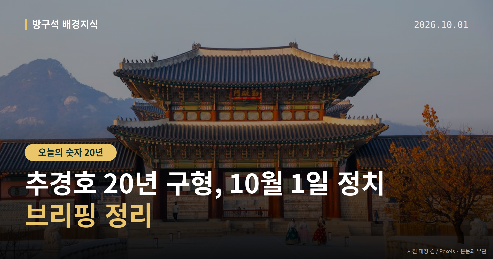
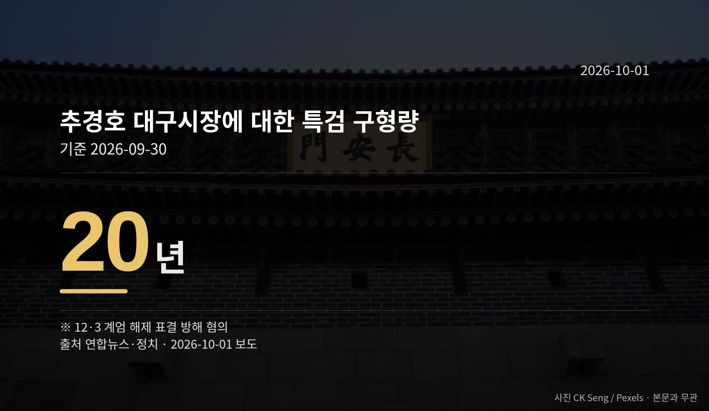

이 글은 2026년 10월 1일 기준으로 정리한 내용입니다.
특검이 12·3 비상계엄 해제 표결을 방해한 혐의로 기소된 추경호 대구시장에게 징역 20년을 구형했습니다. 추경호 20년 구형 소식에 여야는 각각 다른 평가를 내놨고, 유·무죄 판단은 법원에 남아 있습니다.
같은 날 오후 2시 국회 본회의에서는 쟁점법안 처리도 예정돼 있습니다. 하루에 사법과 입법 이슈가 겹친 날입니다.

특검은 지난달 30일 추경호 대구시장(전 국민의힘 원내대표)에게 이 형량을 구형했습니다. 혐의는 12·3 계엄 해제 표결을 방해했다는 것입니다.
구형은 검찰이나 특검이 "이만큼의 형이 적당하다"고 재판부에 의견을 내는 절차입니다. 실제 형량은 재판부가 선고로 정하므로, 구형량과 선고량은 다를 수 있습니다.
추경호 대구시장은 현재 1심 선고 전 단계이며, 유죄가 확정된 상태가 아닙니다.
전은수 더불어민주당 원내대변인은 "추 전 원내대표는 법의 심판은 물론 역사의 심판도 피할 수 없을 것"이라고 말했습니다. 또 특검 주장대로 추 전 원내대표가 대통령 전화를 받은 뒤 의원총회 장소를 세 차례 변경해 표결 참여를 가로막는 데 핵심 역할을 했다고 주장했습니다.
장동혁 국민의힘 대표는 "특검의 구형은 전혀 의미가 없다"며 "법원이 증거조사와 법리에 따라 반드시 무죄를 선고할 것"이라고 말했습니다. 페이스북에는 "명백한 정치 보복이자 터무니없는 내란몰이"라고 적었습니다.
장 대표는 당 의원과 참고인들의 법정 증언을 근거로 "표결 방해 행위는 없었다는 것이 증거조사를 통해 입증됐다"고 주장했습니다. 양쪽 모두 주장이며, 사실 판단은 재판 결과로 확인됩니다.
국회는 1일 오후 2시 본회의를 열어 산업안전보건법 개정안과 도시정비법 개정안 처리를 시도합니다. 민주당은 지난달 의원총회에서 두 법안 처리 방침을 정했고, 조작기소 특검법은 국정감사 이후로 미뤘습니다.
국민의힘은 산업안전보건법의 반복적 산재 기업 과징금 규모가 과도하다고 지적하고, 도시정비법 용적률에도 이견을 보이며 필리버스터(무제한 토론으로 표결을 늦추는 절차)를 검토하고 있습니다.
한병도 민주당 원내대표는 "국민의힘이 필리버스터에 나서면 이번만큼은 토론 종결 표결을 하지 않을 작정"이라고 밝혔습니다. 정점식 국민의힘 원내대표는 "안 해주면 굉장히 감사하다"고 맞받았고, 김승수 원내운영수석은 "필리버스터에 자신감을 가진 의원이 많고 자원자도 많다"고 말했습니다.
국민의힘 원내 관계자는 막판 협상으로 필리버스터 없이 처리될 가능성도 언급했습니다. 처리 여부와 방식은 아직 확정되지 않았습니다.
여러분이 눈여겨볼 다음 일정은 본회의 처리 결과와 추경호 대구시장 1심 선고, 김지용 후보자 인사청문회입니다.
국회의원 발의 법률안 79건. 가장 최근은 한국투자공사법 일부개정법률안(김태년의원 등 10인).
본회의 처리 법률안 1건 — 철회 1건
이번 주 등록된 선거 여론조사 6건
오늘 이슈에 나온 법안은 지금 어디에
열린국회정보·중앙선거여론조사심의위원회 자료를 직접 셌습니다. 여론조사의 자세한 사항은 중앙선거여론조사심의위원회 홈페이지를 참조하세요.
여러분은 '구형'과 '선고'의 차이를 평소 뉴스에서 구분해 보고 계셨나요?
댓글로 알려 주시면 다음 글에 반영하겠습니다.